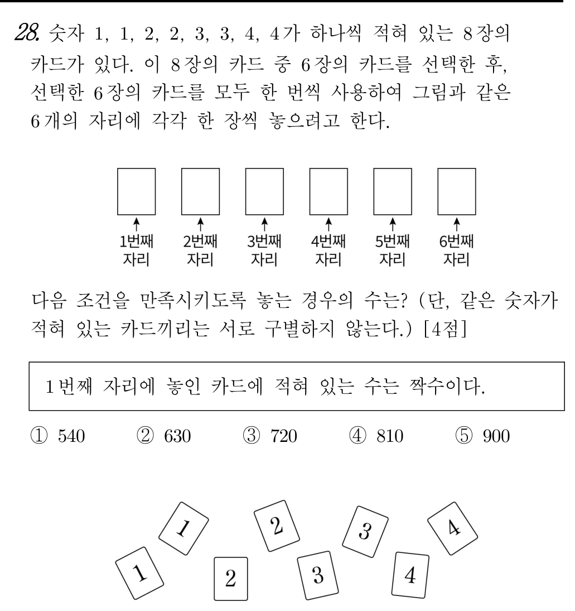

📘 [2026학년도 10월 고3 확통 28번] 같은 숫자가 적힌 카드의 선택과 같은 것이 있는 순열📘 [2026 AY Oct Exam Grade 12 Prob&Stats #28] Card Selection and Permutations with Identical Items
초등학생도 1단계부터 차근차근 따라가면 수능·학력평가 본문항까지 스스로 풀 수 있는 단계별 디딤돌 퀴즈입니다.Elementary-to-advanced step-by-step scaffolding quiz. Instant scoring & explanations upon selection.

📋 원본 문항 핵심 요약 및 목표📋 Official Problem Summary & Objectives
같은 숫자가 적힌 카드의 선택과 같은 것이 있는 순열
첫째 자리에 짝수($2$ 또는 $4$)를 놓은 뒤 나머지 $5$자리에 들어갈 숫자의 쌍 개수에 따라 케이스를 나누어 $2 \times 360 = 720$ 구하기
수학자료실의 확률·조합 자료는 시행과 사건(표본공간과 부분집합)의 구조와 조합(${}_n\mathrm{C}_r$)의 단계별 대수적·기하학적 원리를 투명하게 시각화합니다.
• [시행과 표본공간 분할] 연속 시행의 결과를 순서쌍 $(x_1, y_1, x_2, y_2)$로 나타내어 전체 표본공간을 빠짐없이 격자화하는 과정
• [여사건과 배반사건 소거] 복잡한 '또는' 조건을 여사건의 상호배반인 케이스들로 분해하고 불가능한 순서쌍을 소거하여 정확히 세는 논리
• [조건부확률의 축소된 표본공간] 사건 $\mathrm{I})$이 일어났을 때 그 안에서 사건 $\mathrm{II})$가 차지하는 비율 $\dfrac{n(\mathrm{I}\cap\mathrm{II})}{n(\mathrm{I})}$의 의미를 하단 자료에서 깊이 있게 탐구해 보세요.
The archive's flipbook proof materials demonstrate how fundamental mathematical principles converge smoothly frame by frame. Explore the interactive dynamic geometry applets below.
🔰 제0단계 · 수학 기호 번역기🔰 Step 0 · Mathematical Symbol Translator
🔰 1단계 · [초등 짝수 고르기] 첫 번째 자리에 올 수 있는 짝수 종류 세기🔰 Step 1 · [Elementary Even Numbers] Counting choices for the first even digit
먼저 알아야 할 지식
숫자 $1, 2, 3, 4$ 중에서 초등학교에서 배운 짝수는 $2$와 $4$ 두 가지입니다! 같은 숫자가 적힌 카드끼리는 구별하지 않으므로, 맨 앞자리에 놓을 수 있는 숫자는 $2$ 또는 $4$의 $2$가지입니다.🌿 2단계 · [경우 1] 맨 앞이 $2$이고 나머지 $5$자리에 $2$가 안 쓰이는 경우🌿 Step 2 · [Case 1] First digit is $2$, and the other $2$ is not used in the remaining $5$ positions
먼저 알아야 할 지식
맨 앞에 $2$를 $1$장 썼을 때, 남은 카드 중 $2$를 빼고 $\{1, 1, 3, 3, 4, 4\}$ $6$장 중에서 $5$장을 골라 나열합니다. $1, 3, 4$ 중 $2$종류는 $2$장씩, $1$종류는 $1$장 쓰이므로 ${}_{3}\mathrm{C}_{1} \times \frac{5!}{2!2!} = 3 \times 30 = 90$가지입니다.🌱 3단계 · [경우 2] 나머지 $5$자리에 남은 $2$가 $1$장 포함되는 경우🌱 Step 3 · [Case 2] The remaining $2$ is included among the other $5$ positions
먼저 알아야 할 지식
남은 $2$ 한 장을 포함하면, 나머지 $4$자리는 $\{1, 1, 3, 3, 4, 4\}$에서 $4$장을 골라야 합니다. (a) 두 쌍(예: $1,1,3,3$)을 고르면 ${}_{3}\mathrm{C}_{2} \times \frac{5!}{2!2!} = 3 \times 30 = 90$가지이고, (b) 한 쌍과 단짝 두 개(예: $1,1,3,4$)를 고르면 ${}_{3}\mathrm{C}_{1} \times \frac{5!}{2!} = 3 \times 60 = 180$가지입니다.🌳 4단계 · [맨 앞이 $2$일 때 총합] 경우 1과 경우 2 더하기🌳 Step 4 · [Total for First Digit $2$] Adding Case 1 and Case 2
먼저 알아야 할 지식
맨 앞자리가 $2$일 때 전체 경우의 수는 $90 + 270 = 360$가지입니다.💎 5단계 · [최종 종합] 첫 자리 짝수 $2$종류($2$ 또는 $4$) 곱하기💎 Step 5 · [Final Synthesis] Multiplying by $2$ choices for the first digit
먼저 알아야 할 지식
맨 앞자리가 $4$일 때도 대칭성에 의해 똑같이 $360$가지이므로 $2 \times 360 = 720$가지입니다.📘 mathedu
📝 먼저 이름을 입력하세요
이름을 입력해야 학습 기록이 저장됩니다.Your learning progress will be saved under this name.
🎯 최종 문제 + 상세 풀이🎯 Final Official Exam Problem & Complete Solution
📋 [문제 분석 및 핵심 출제 의도]
본 문항은 같은 것이 있는 순열과 대칭성을 활용하여 $8$장 중 $6$장을 뽑아 나열하는 경우의 수를 구하는 문항입니다. 첫 번째 자리를 고정하고 나머지 $5$자리를 분류하거나, 전체 $6$장 배열 수의 절반($\frac{1}{2}$)으로 계산하면 매우 명쾌하게 풀립니다.
🎨 [그림으로 이해하는 시각적 도형·개념 다이어그램]
🗺️ [한눈에 보는 도식화 풀이 흐름도 (Schematic Solution Flowchart)]
| STEP 1 · 출발 조건🔰 1단계 · [초등 짝수 고르기] 첫 번째 자리에 올 수 있는 짝수 종류 세기 ⇒ $2$ | ➔ | STEP 2 · 도형·공식 변환🌿 2단계 · [경우 1] 맨 앞이 $2$이고 나머지 $5$자리에 $2$가 안 쓰이는 경우 ⇒ $90$ | ➔ | STEP 3 · 핵심 식 도출🌳 4단계 · [맨 앞이 $2$일 때 총합] 경우 1과 경우 2 더하기 ⇒ $360$ | ➔ | STEP 4 · 결합 및 계산💎 5단계 · [최종 종합] 첫 자리 짝수 $2$종류($2$ 또는 $4$) 곱하기 ⇒ $720$ | ⇒ | 🎯 최종 정답$720$ |
📐 [단계별 상세 풀이 전개]
1단계: 뽑힌 $6$장의 카드 구성 분류 (전체 나열 수)
$8$장 중에서 $6$장을 택하면 제외되는 카드는 $2$장입니다:
- (유형 A) 같은 숫자 $2$장이 제외될 때 ($3$종류 각각 $2$장씩, 예: $1,1,2,2,3,3$):
제외할 숫자 선택 ${}_{4}\mathrm{C}_{1} = 4$가지, $6$장 나열 $\frac{6!}{2!2!2!} = 90$가지 $\implies 4 \times 90 = 360$가지.
- (유형 B) 서로 다른 숫자 $2$장이 제외될 때 ($2$종류는 $2$장씩, $2$종류는 $1$장씩, 예: $1,1,2,2,3,4$):
제외할 숫자 $2$종류 선택 ${}_{4}\mathrm{C}_{2} = 6$가지, $6$장 나열 $\frac{6!}{2!2!} = 180$가지 $\implies 6 \times 180 = 1080$가지.
따라서 $6$장을 택해 일렬로 나열하는 전체 경우의 수는 $360 + 1080 = 1440$가지입니다.
2단계: 첫 번째 자리가 짝수인 경우의 수 (대칭성 활용)
숫자 $1, 2, 3, 4$가 모두 $2$장씩으로 동등하고 짝수($2, 4$)와 홀수($1, 3$)의 개수가 같으므로, 첫 번째 자리에 짝수가 오는 경우의 수는 전체의 정확히 절반입니다:
$$\frac{1440}{2} = 720$$
🪜 [초등 눈높이 디딤돌 전 단계(1단계~5단계) 완전 연결 상세 해설]
위 디딤돌 문제에서 밟아 온 $1$단계부터 $5$단계까지의 작은 조각들을 순서대로 연결하면 본문항의 풀이가 빈틈없이 완성됩니다.
- 🔰 1단계 · [초등 짝수 고르기] 첫 번째 자리에 올 수 있는 짝수 종류 세기
• 핵심 개념 및 원리: 숫자 $1, 2, 3, 4$ 중에서 초등학교에서 배운 짝수는 $2$와 $4$ 두 가지입니다! 같은 숫자가 적힌 카드끼리는 구별하지 않으므로, 맨 앞자리에 놓을 수 있는 숫자는 $2$ 또는 $4$의 $2$가지입니다.
• 단계 확인 정답 ($2$): $2$ 또는 $4$이므로 $2$가지입니다. (맨 앞자리를 $2$로 고정해 구한 뒤 $2$배 하면 됩니다!) - 🌿 2단계 · [경우 1] 맨 앞이 $2$이고 나머지 $5$자리에 $2$가 안 쓰이는 경우
• 핵심 개념 및 원리: 맨 앞에 $2$를 $1$장 썼을 때, 남은 카드 중 $2$를 빼고 $\{1, 1, 3, 3, 4, 4\}$ $6$장 중에서 $5$장을 골라 나열합니다. $1, 3, 4$ 중 $2$종류는 $2$장씩, $1$종류는 $1$장 쓰이므로 ${}_{3}\mathrm{C}_{1} \times \frac{5!}{2!2!} = 3 \times 30 = 90$가지입니다.
• 단계 확인 정답 ($90$): $3 \times 30 = 90$입니다. - 🌱 3단계 · [경우 2] 나머지 $5$자리에 남은 $2$가 $1$장 포함되는 경우
• 핵심 개념 및 원리: 남은 $2$ 한 장을 포함하면, 나머지 $4$자리는 $\{1, 1, 3, 3, 4, 4\}$에서 $4$장을 골라야 합니다. (a) 두 쌍(예: $1,1,3,3$)을 고르면 ${}_{3}\mathrm{C}_{2} \times \frac{5!}{2!2!} = 3 \times 30 = 90$가지이고, (b) 한 쌍과 단짝 두 개(예: $1,1,3,4$)를 고르면 ${}_{3}\mathrm{C}_{1} \times \frac{5!}{2!} = 3 \times 60 = 180$가지입니다.
• 단계 확인 정답 ($270$): $90 + 180 = 270$가지입니다. - 🌳 4단계 · [맨 앞이 $2$일 때 총합] 경우 1과 경우 2 더하기
• 핵심 개념 및 원리: 맨 앞자리가 $2$일 때 전체 경우의 수는 $90 + 270 = 360$가지입니다.
• 단계 확인 정답 ($360$): $90 + 270 = 360$입니다. - 💎 5단계 · [최종 종합] 첫 자리 짝수 $2$종류($2$ 또는 $4$) 곱하기
• 핵심 개념 및 원리: 맨 앞자리가 $4$일 때도 대칭성에 의해 똑같이 $360$가지이므로 $2 \times 360 = 720$가지입니다.
• 단계 확인 정답 ($720$): $2 \times 360 = 720$이므로 정답은 ③입니다.
✨ [정답 도출 및 실전 점검 포인트]
따라서 구하는 경우의 수는 $720$이므로 정답은 ③번입니다.
📋 [Problem Analysis & Core Concepts]
This problem counts permutations of $6$ cards chosen from $\{1,1,2,2,3,3,4,4\}$ using permutations with repetition and symmetry.
🎨 [Visual Geometric & Conceptual Diagram]
🗺️ [At-a-Glance Schematic Solution Flowchart]
| STEP 1 · Given Condition🔰 Step 1 · [Elementary Even Numbers] Counting choices for the first even digit ⇒ $2$ | ➔ | STEP 2 · Visual/Formula Transform🌿 Step 2 · [Case 1] First digit is $2$, and the other $2$ is not used in the remaining $5$ positions ⇒ $90$ | ➔ | STEP 3 · Key Derivation🌳 Step 4 · [Total for First Digit $2$] Adding Case 1 and Case 2 ⇒ $360$ | ➔ | STEP 4 · Synthesis💎 Step 5 · [Final Synthesis] Multiplying by $2$ choices for the first digit ⇒ $720$ | ⇒ | 🎯 최종 정답$720$ |
📐 [Step-by-Step Rigorous Derivation]
Step 1: Total number of $6$-card arrangements
- Leaving out two identical cards: ${}_{4}\mathrm{C}_{1} \times \frac{6!}{2!2!2!} = 4 \times 90 = 360$.
- Leaving out two different cards: ${}_{4}\mathrm{C}_{2} \times \frac{6!}{2!2!} = 6 \times 180 = 1080$.
Total arrangements $= 360 + 1080 = 1440$.
Step 2: Apply symmetry for the first digit
Since there are two even digits ($2, 4$) and two odd digits ($1, 3$) with identical multiplicities, exactly half start with an even digit: $\frac{1440}{2} = 720$.
🪜 [Complete Step-by-Step Scaffolding Walkthrough (Steps 1–5)]
Connecting each elementary-grounded scaffolding step from Step 1 to Step 5 completes the entire derivation without any logical gaps:
- 🔰 Step 1 · [Elementary Even Numbers] Counting choices for the first even digit
• Core Principle: Among $1, 2, 3, 4$, the elementary even numbers are $2$ and $4$. Since identical digits are indistinguishable, there are $2$ choices for the first position.
• Step Verification ($2$): There are $2$ choices ($2$ or $4$). - 🌿 Step 2 · [Case 1] First digit is $2$, and the other $2$ is not used in the remaining $5$ positions
• Core Principle: If the second $2$ is not used, we pick $5$ cards from $\{1, 1, 3, 3, 4, 4\}$ (two pairs and one single): $3 \times \frac{5!}{2!2!} = 3 \times 30 = 90$ ways.
• Step Verification ($90$): $3 \times 30 = 90$. - 🌱 Step 3 · [Case 2] The remaining $2$ is included among the other $5$ positions
• Core Principle: If the second $2$ is used, the other $4$ cards from $\{1,1,3,3,4,4\}$ can be: (a) two pairs: ${}_{3}\mathrm{C}_{2} \times \frac{5!}{2!2!} = 90$, or (b) one pair and two singles: ${}_{3}\mathrm{C}_{1} \times \frac{5!}{2!} = 180$.
• Step Verification ($270$): $90 + 180 = 270$. - 🌳 Step 4 · [Total for First Digit $2$] Adding Case 1 and Case 2
• Core Principle: When the first digit is $2$, the total is $90 + 270 = 360$.
• Step Verification ($360$): $90 + 270 = 360$. - 💎 Step 5 · [Final Synthesis] Multiplying by $2$ choices for the first digit
• Core Principle: By symmetry, starting with $4$ also gives $360$ ways, so $2 \times 360 = 720$.
• Step Verification ($720$): $2 \times 360 = 720$ (choice ③).
✨ [Final Answer & Practical Tips]
The correct answer is choice ③ ($720$).
 📚 수학자료실 공식 연계 심층 탐구
📚 수학자료실 공식 연계 심층 탐구
이 문제와 관련된 수학적 원리를 수학자료실의 시각적 동적 기하 조작 및 원리 증명 자료와 함께 더 깊이 탐구해보세요.
🎉 완료!🎉 Completed!